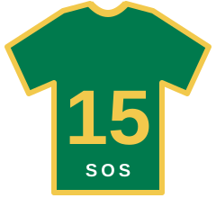

SOS · Rassie se oproep · trui #15
Wallie — jy’s die #15
— dae tot die openingswedstryd. Wen die matric-Wêreldbeker: een blok, een prent, een toe-boek op ’n slag.
Lees Rassie se oproep
Damian Willemse, Quan Horn, Aphelele Fassi, Cheslin Kolbe en Sacha Feinberg-Mngomezulu het ’n misterieuse siekte. Rassie het jou gebel: jy trek die #15 aan en speel jouself in die Springbokspan — deur hierdie matric-Wêreldbeker te wen. Teiken: 60% alle vakke · Wisk. Gelett. 80% · Engels 70%. Hard-proctor + Pa kyk saam.
Openingswedstryd ·
Laai aftelling…
Vandag se matchday-kaarte
Tik die prent om die les te sien. Begin sit die kamera aan en wys die les langs jou.
Stuur my log na Pa
Laai die volle kamp-log (wallie911_v2_bok) af as JSON.
Deel dit in een tik na Pa — hannovz@gmail.com — via WhatsApp of e-pos.
Lesse — kyk, toe-boek, memo
Een konsep per skerm. Bestudeer die prent, maak toe, skryf wat jy onthou, kyk dan die memo.
Afrigter-sessie (hard observeerder)
Kamera aan. Bly op hierdie oortjie: wegkyk = waarskuwing, 3× = slot tot Pa-PIN. Die les hieronder oop maak is veilig.
Memo hier in die app tel nie as wegkyk nie (maks 15 min, Pa kry ’n sein). Tab-wissel of ’n ander program tel steeds.
Vakke
Prelim → teiken per vak. Tik ’n prent vir die les; maklike punte-lys onderaan elke kaart.
Foutbank
Elke fout = hertoets later. Dit is jou egte leerplan.
Vraestelle oplaai
Hibried: laai PDF / foto van vraestel + memo. Metadata bly in hierdie blaaier (lokaal).
Pa-dashboard
Lewendige status · waarskuwings · dag-opsomming. Tydens ’n hard-sessie sien Pa lewendig (met wagwoord) status, tyd, waarskuwings en elke 45 s ’n kamera-foto. Geen deurlopende video nie.
Afstand-waarneming (jy by kliente)
Pa-konsole (wagwoord):
pa-afstand.html
· Push-topic: wallie911-pa-15sos-hanno
· ntfy-app subscribe
Toestemming: …
As die foon stil is: vra Wallie om die log hier af te laai en te stuur.
Pa-PIN
Verstek-PIN is 9110. Verander dit hier (word plaaslik gestoor).
Sessie-geskiedenis (vandag)
Pa-survey (jou oë — nie net sy woord)
Doen dit ná jy by die buitegebou gekyk het of ná ’n rooi-blok. ±60 sek.
Daaglikse verbeter-lus
Wallie se survey + jou Pa-check saam. Waar hulle bots, wen jou oë.
Vlae
Aksies vir môre / volgende blok
Rou terugvoer (vandag)
Probleem-rapportee (app / kurrikulum)
Iets werk nie
Rapporteer gou — app/kode of kurrikulum/inhoud. Pa sien dit op Verbeter. Geen skaamte: foute help ons die kamp regmaak.
Jou rapportee (vandag)
Dokumente
Ontwerp en plan as HTML in die browser.